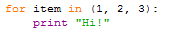
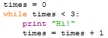

for vs whileJust for reference here are the two implementations of our artificial Hi! Hi! Hi! example.
Using a for statement,

And using a while statement,

Since the for statement version is more compact and reads
more naturally you might wonder why while loops are ever used.
The answer is that not all repetitions can be naturally represented using a
for loop. Remember that the essential nature of a
for loop is "for every item in this sequence do this". If that
is the pattern of your computation then it is the logical and elegant choice,
but many other repetitive forms of processing do not fit this pattern and
for those we turn to the more general and flexible
while statement.